每日详情 含风险评估
成都 → 康定 → 新都桥
📋 行程安排
中午12点从成都出发,经雅康高速,翻越折多山垭口(4298m),约5.5小时(含折多山停留拍照)抵达新都桥。今晚住新都桥,适应海拔。
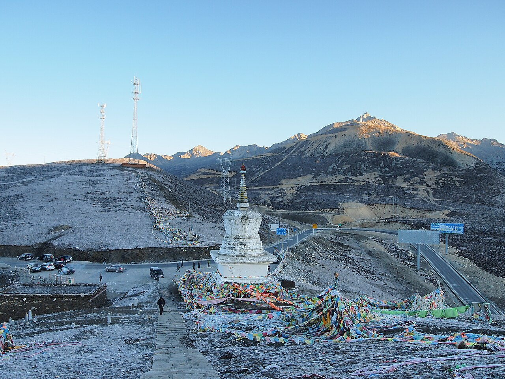
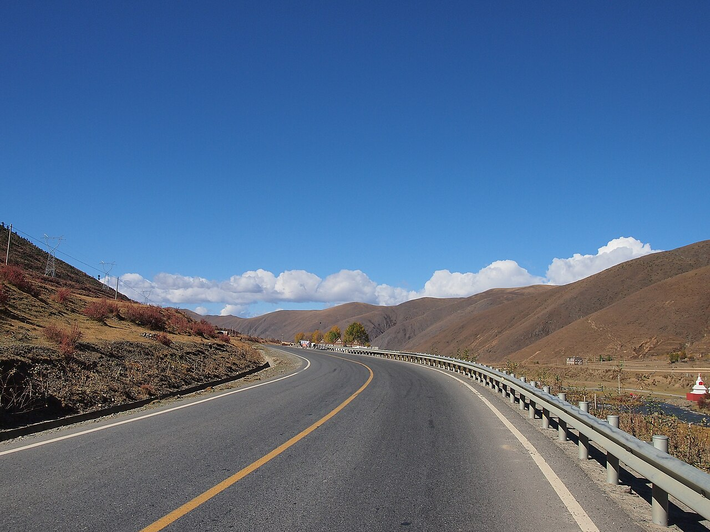
⚠️ 今日风险
💡 贴士
- 雅康高速已全线贯通,隧道多,注意限速80-100km/h
- 折多山垭口有白塔和经幡,下车拍照注意穿外套(气温比山下低10-15℃)
- 新都桥住宿推荐桔子/全季(约350-450元/晚),提前预订
- 晚餐吃牦牛肉汤锅,暖身暖胃
新都桥 → 理塘 → 稻城香格里拉镇
📋 行程安排
早6:00出发,全天赶路。翻越剪子湾山(4659m)、卡子拉山(4718m),经"世界高城"理塘(4014m),午后到稻城,下午3点左右到香格里拉镇休整补给。
核心理由:今天必须赶到香格里拉镇,否则D3跑不完。风景都在路上,别恋战。
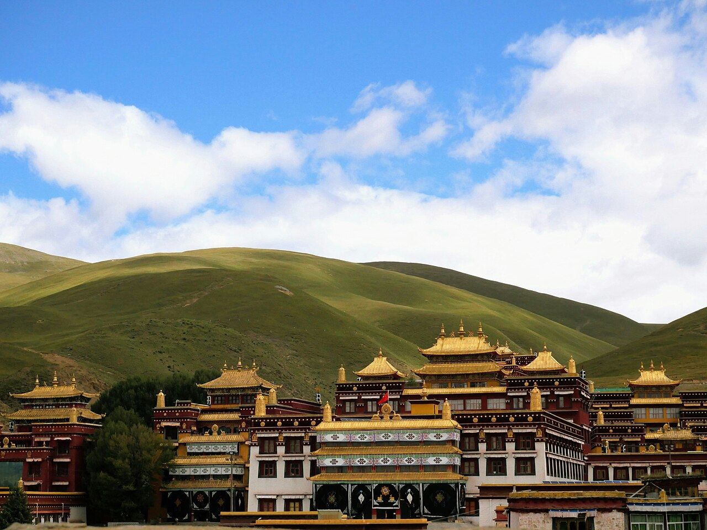
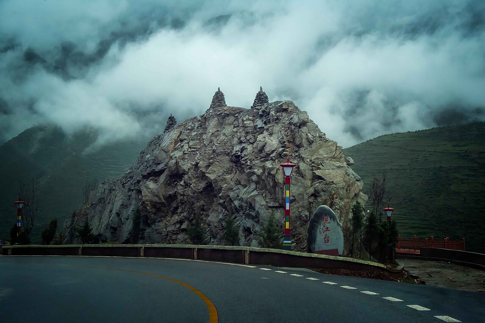
⚠️ 今日风险
💡 贴士
- 理塘县城有加油站,在这里加满油(稻城方向加油站少)
- 理塘长青春科尔寺值得停车10分钟远观拍照
- 香格里拉镇住宿推荐桔子/全季(约300-400元/晚),海拔2900m比景区内舒服
- 镇上超市补给:水、巧克力、氧气瓶(2-3瓶备用)
- 晚餐别吃太饱,高海拔消化慢
稻城亚丁景区 · 长线徒步
📋 行程安排
早起进山,挑战牛奶海(4600m)、五色海(4700m)。路线:景区大门→扎灌崩(观光车)→冲古寺→洛绒牛场(电瓶车)→徒步至牛奶海→五色海→原路返回。
务必骑马(洛绒牛场段)保留体力! 马匹每天限额约30匹,6点前进山才抢得到。
"下午5点前出景区"——前提是5:00从香格里拉镇出发,6:30前到冲古寺。
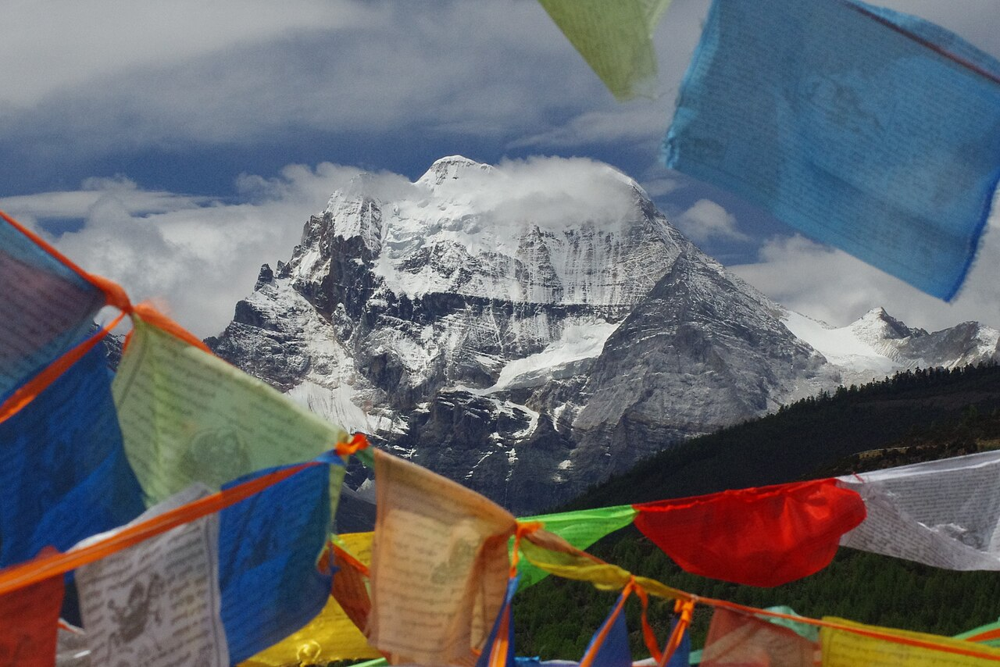
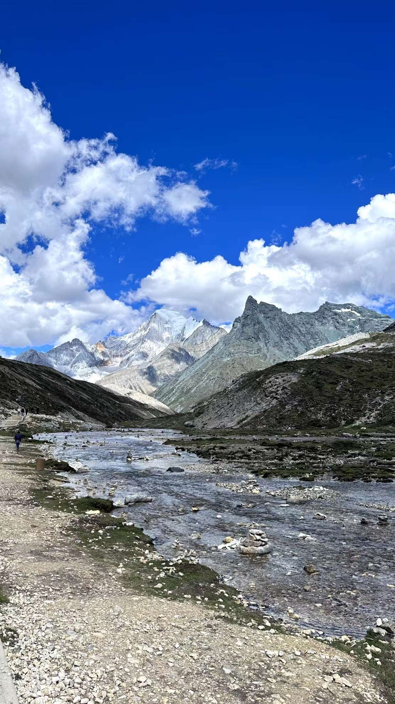
⚠️ 今日风险
💡 贴士
- 门票146元+观光车120元,提前在"稻城亚丁"公众号预订
- 电瓶车(冲古寺↔洛绒牛场)往返80元,强烈建议坐
- 穿登山鞋或防滑运动鞋,最后1km碎石路很滑
- 带冲锋衣+抓绒,4700m风大体感冷(可能10℃以下)
- 防晒霜SPF50+,高海拔紫外线极强
- 午餐带干粮(能量棒、巧克力、面包),景区内无餐饮
- 氧气瓶2-3瓶,不舒服时吸几口缓解
香格里拉镇 → 乡城 → 德钦飞来寺
📋 行程安排
早6:30出发,走"稻香公路"(乡城-得荣-奔子栏-德钦),约330-350km。下午抵达飞来寺,蹲守梅里雪山日照金山(D5早晨)。
出发前在香格里拉镇加满油!乡城到奔子栏中途基本无可靠加油站。
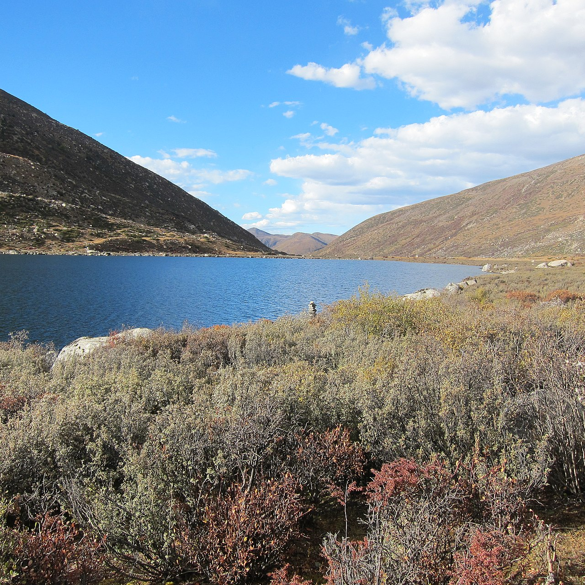
⚠️ 今日风险
💡 贴士
- 飞来寺住宿:观景酒店(150-300元/晚),窗户朝向梅里雪山
- 提前问酒店是否有供氧/地暖,飞来寺海拔3400m
- 晚饭后在飞来寺观景台散步,天气好可看星空
- 设好6:00闹钟,日出前15分钟到位
飞来寺 → 香格里拉(市) → 丽江
📋 行程安排
早起看"日照金山"(6:30左右,日出阳光打在卡瓦格博峰上)。看完8:00出发,先到香格里拉市(3.5h),简单逛独克宗古城;下午2点继续出发丽江(2.5h),傍晚6点前到,晚上逛丽江古城。
今天开车约6小时,但分两段开,体感好很多。
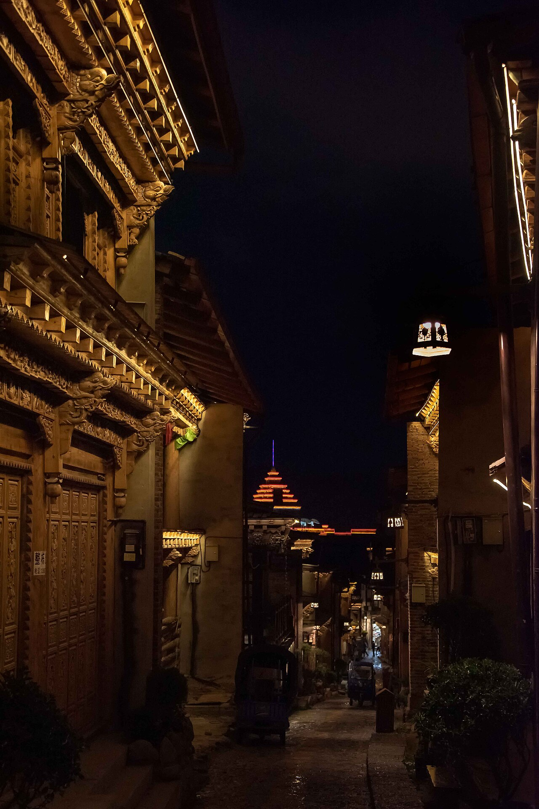
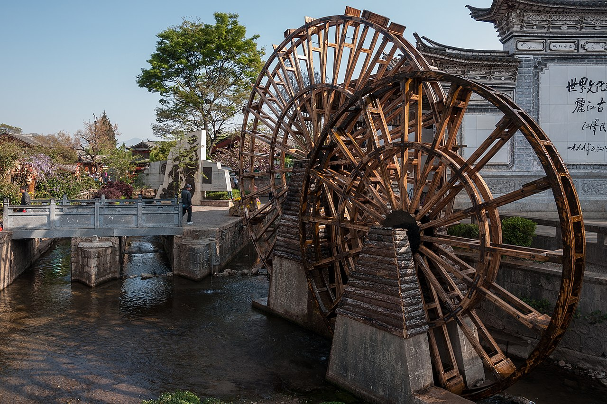
⚠️ 今日风险
💡 贴士
- 香格里拉市海拔3300m,到这里海拔适应已没问题
- 独克宗古城有龟山公园,可转世界最大转经筒
- 丽江古城住宿:桔子/全季(约400-500元/晚),古城外围
- 晚上逛古城吃腊排骨火锅,人均80元
- 丽江古城维护费50元/人(晚上6点后不收)
丽江 → 大理
📋 行程安排
上午睡个懒觉或逛白沙古镇(比大研古城清静,有白族扎染和壁画)。中午出发去大理(2.5h高速)。下午沿洱海东岸(双廊、挖色)玩着开进古城,晚上住大理古城。
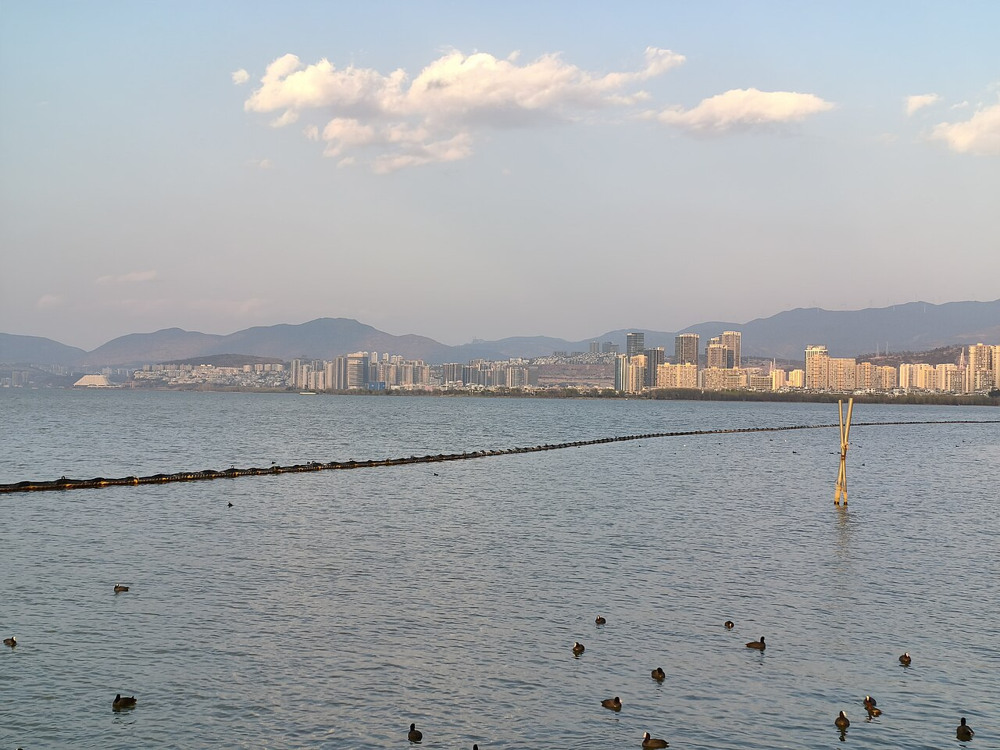

⚠️ 今日风险
💡 贴士
- 白沙古镇免费,距大研古城10分钟车程
- 双廊到挖色约30km沿海公路,风景好
- 大理古城住宿:全季/桔子(约350-450元/晚)
- 晚餐吃白族砂锅鱼,人均60元
- 晚上逛人民路、洋人街,有民谣酒吧
大理 → 昆明(终点)
📋 行程安排
上午沿洱海西岸(喜洲、才村)溜达,看稻田+白族村落。中午12点前出发去昆明(约320km/4.5h高速)。下午5点左右到,晚上在昆明吃顿好的结束行程。
提前预订昆明还车!异地还车费通常500-1500元,务必确认还车点营业时间(昆明门店晚8点关门)。
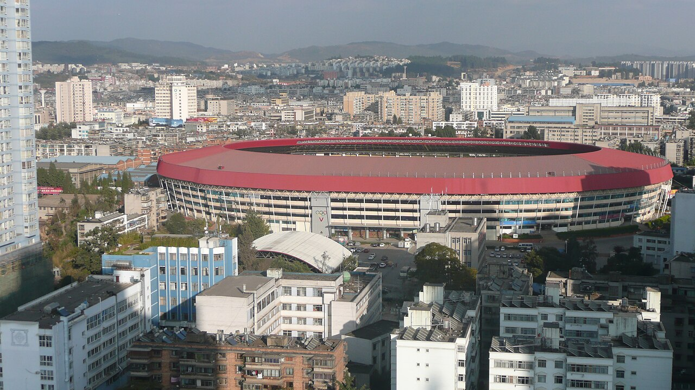
⚠️ 今日风险
💡 贴士
- 喜洲古镇免费,有严家大院(白族民居博物馆)
- 才村看洱海日出,但8月多云,不一定看得到
- 昆明晚餐推荐:过桥米线(建新园/桥香园)或汽锅鸡
- 还车前加满油(最近的加油站离还车点5分钟)
- 昆明住宿:全季/桔子(约300-400元/晚)